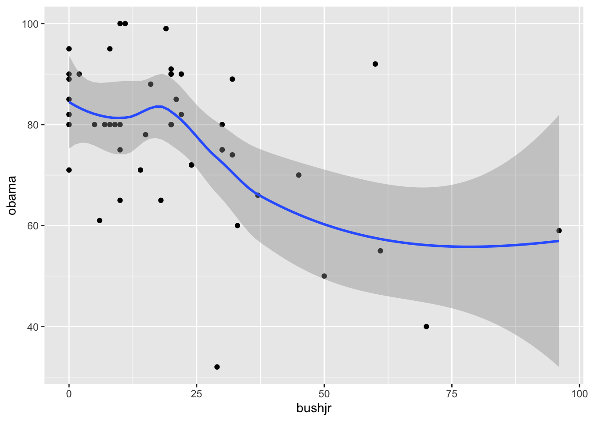
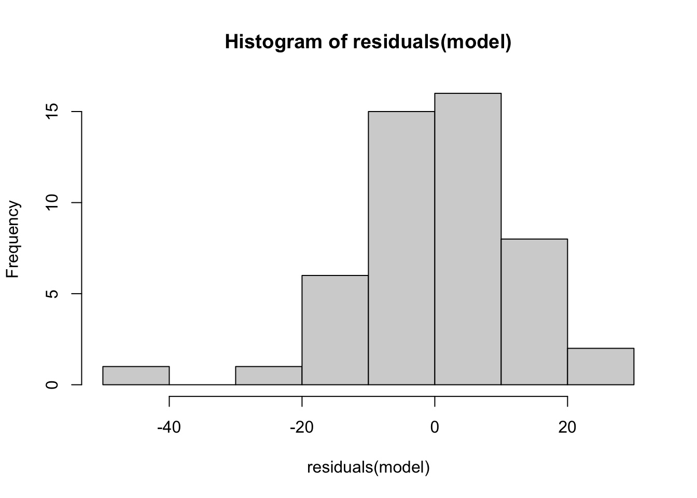
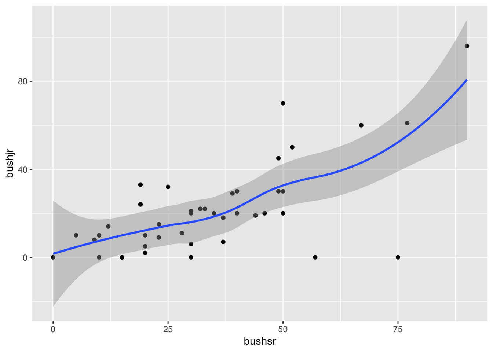

Last updated: 2022-06-03
Checks: 7 0
Knit directory: stats-in-medicine/
This reproducible R Markdown analysis was created with workflowr (version 1.7.0). The Checks tab describes the reproducibility checks that were applied when the results were created. The Past versions tab lists the development history.
Great! Since the R Markdown file has been committed to the Git repository, you know the exact version of the code that produced these results.
Great job! The global environment was empty. Objects defined in the global environment can affect the analysis in your R Markdown file in unknown ways. For reproduciblity it’s best to always run the code in an empty environment.
The command set.seed(20220401) was run prior to running
the code in the R Markdown file. Setting a seed ensures that any results
that rely on randomness, e.g. subsampling or permutations, are
reproducible.
Great job! Recording the operating system, R version, and package versions is critical for reproducibility.
Nice! There were no cached chunks for this analysis, so you can be confident that you successfully produced the results during this run.
Great job! Using relative paths to the files within your workflowr project makes it easier to run your code on other machines.
Great! You are using Git for version control. Tracking code development and connecting the code version to the results is critical for reproducibility.
The results in this page were generated with repository version 8544085. See the Past versions tab to see a history of the changes made to the R Markdown and HTML files.
Note that you need to be careful to ensure that all relevant files for
the analysis have been committed to Git prior to generating the results
(you can use wflow_publish or
wflow_git_commit). workflowr only checks the R Markdown
file, but you know if there are other scripts or data files that it
depends on. Below is the status of the Git repository when the results
were generated:
Ignored files:
Ignored: .Rhistory
Ignored: .Rproj.user/
Ignored: data/Unit7Data.xlsx
Ignored: data/Unit_1_lab_manual.docx
Ignored: data/classdata.xlsx
Ignored: data/covid_data.xlsx
Note that any generated files, e.g. HTML, png, CSS, etc., are not included in this status report because it is ok for generated content to have uncommitted changes.
These are the previous versions of the repository in which changes were
made to the R Markdown (analysis/unit-8.Rmd) and HTML
(docs/unit-8.html) files. If you’ve configured a remote Git
repository (see ?wflow_git_remote), click on the hyperlinks
in the table below to view the files as they were in that past version.
| File | Version | Author | Date | Message |
|---|---|---|---|---|
| Rmd | 8544085 | elliothershberg | 2022-06-03 | wflow_publish(c("analysis/index.Rmd", "analysis/unit-8.Rmd", |
Notes for Unit 8: Linear Regression
\[ Cov(x,y) = \frac{\sum_{i=1}^{n}(x_i - \bar X)(y_i - \bar Y)}{n - 1} \]
library(readxl)
library(tidyverse)── Attaching packages ─────────────────────────────────────── tidyverse 1.3.1 ──✓ ggplot2 3.3.5 ✓ purrr 0.3.4
✓ tibble 3.1.6 ✓ dplyr 1.0.7
✓ tidyr 1.1.4 ✓ stringr 1.4.0
✓ readr 2.1.1 ✓ forcats 0.5.1── Conflicts ────────────────────────────────────────── tidyverse_conflicts() ──
x dplyr::filter() masks stats::filter()
x dplyr::lag() masks stats::lag()classdata <- read_excel("data/classdata.xlsx")
ggplot(classdata, aes(x = bushjr, y = obama)) +
geom_point() +
geom_smooth()`geom_smooth()` using method = 'loess' and formula 'y ~ x'Warning: Removed 1 rows containing non-finite values (stat_smooth).Warning: Removed 1 rows containing missing values (geom_point).
cor.test(classdata$bushjr, classdata$obama)
Pearson's product-moment correlation
data: classdata$bushjr and classdata$obama
t = -4.0444, df = 47, p-value = 0.0001937
alternative hypothesis: true correlation is not equal to 0
95 percent confidence interval:
-0.6906298 -0.2647384
sample estimates:
cor
-0.5081095 model <- glm(obama ~ bushjr, data = classdata)
summary(model)
Call:
glm(formula = obama ~ bushjr, data = classdata)
Deviance Residuals:
Min 1Q Median 3Q Max
-42.856 -5.688 0.518 8.288 28.724
Coefficients:
Estimate Std. Error t value Pr(>|t|)
(Intercept) 85.68822 2.67735 32.005 < 2e-16 ***
bushjr -0.37354 0.09236 -4.044 0.000194 ***
---
Signif. codes: 0 '***' 0.001 '**' 0.01 '*' 0.05 '.' 0.1 ' ' 1
(Dispersion parameter for gaussian family taken to be 160.7708)
Null deviance: 10186.0 on 48 degrees of freedom
Residual deviance: 7556.2 on 47 degrees of freedom
(1 observation deleted due to missingness)
AIC: 391.93
Number of Fisher Scoring iterations: 2# plot(model)
hist(residuals(model))
shapiro.test(residuals(model))
Shapiro-Wilk normality test
data: residuals(model)
W = 0.96824, p-value = 0.206model_2 <- glm(obama ~ bushjr + politics, data = classdata)
summary(model_2)
Call:
glm(formula = obama ~ bushjr + politics, data = classdata)
Deviance Residuals:
Min 1Q Median 3Q Max
-24.5685 -4.2787 0.5438 6.1483 15.5123
Coefficients:
Estimate Std. Error t value Pr(>|t|)
(Intercept) 31.06346 8.84217 3.513 0.00102 **
bushjr -0.04169 0.08606 -0.484 0.63042
politics 0.64566 0.10167 6.350 9.41e-08 ***
---
Signif. codes: 0 '***' 0.001 '**' 0.01 '*' 0.05 '.' 0.1 ' ' 1
(Dispersion parameter for gaussian family taken to be 88.28957)
Null deviance: 10153 on 47 degrees of freedom
Residual deviance: 3973 on 45 degrees of freedom
(2 observations deleted due to missingness)
AIC: 356.19
Number of Fisher Scoring iterations: 2ggplot(classdata, aes(x = bushsr, y = bushjr)) +
geom_point() +
geom_smooth()`geom_smooth()` using method = 'loess' and formula 'y ~ x'Warning: Removed 8 rows containing non-finite values (stat_smooth).Warning: Removed 8 rows containing missing values (geom_point).
cor.test(classdata$bushsr, classdata$bushjr)
Pearson's product-moment correlation
data: classdata$bushsr and classdata$bushjr
t = 5.6673, df = 40, p-value = 1.387e-06
alternative hypothesis: true correlation is not equal to 0
95 percent confidence interval:
0.4558863 0.8074982
sample estimates:
cor
0.6673507 model <- glm(bushjr ~ bushsr, data = classdata)
summary(model)
Call:
glm(formula = bushjr ~ bushsr, data = classdata)
Deviance Residuals:
Min 1Q Median 3Q Max
-49.755 -7.548 0.042 7.513 37.674
Coefficients:
Estimate Std. Error t value Pr(>|t|)
(Intercept) -2.5299 4.8812 -0.518 0.607
bushsr 0.6971 0.1230 5.667 1.39e-06 ***
---
Signif. codes: 0 '***' 0.001 '**' 0.01 '*' 0.05 '.' 0.1 ' ' 1
(Dispersion parameter for gaussian family taken to be 251.5877)
Null deviance: 18144 on 41 degrees of freedom
Residual deviance: 10064 on 40 degrees of freedom
(8 observations deleted due to missingness)
AIC: 355.31
Number of Fisher Scoring iterations: 2model_2 <- glm(bushjr ~ bushsr + politics, data = classdata)
summary(model_2)
Call:
glm(formula = bushjr ~ bushsr + politics, data = classdata)
Deviance Residuals:
Min 1Q Median 3Q Max
-41.218 -5.915 0.748 6.038 27.461
Coefficients:
Estimate Std. Error t value Pr(>|t|)
(Intercept) 34.2166 14.4094 2.375 0.022584 *
bushsr 0.5048 0.1350 3.740 0.000591 ***
politics -0.4114 0.1531 -2.687 0.010539 *
---
Signif. codes: 0 '***' 0.001 '**' 0.01 '*' 0.05 '.' 0.1 ' ' 1
(Dispersion parameter for gaussian family taken to be 217.7287)
Null deviance: 18144.1 on 41 degrees of freedom
Residual deviance: 8491.4 on 39 degrees of freedom
(8 observations deleted due to missingness)
AIC: 350.17
Number of Fisher Scoring iterations: 2
sessionInfo()R version 4.1.1 (2021-08-10)
Platform: x86_64-apple-darwin17.0 (64-bit)
Running under: macOS Big Sur 10.16
Matrix products: default
BLAS: /Library/Frameworks/R.framework/Versions/4.1/Resources/lib/libRblas.0.dylib
LAPACK: /Library/Frameworks/R.framework/Versions/4.1/Resources/lib/libRlapack.dylib
locale:
[1] en_US.UTF-8/en_US.UTF-8/en_US.UTF-8/C/en_US.UTF-8/en_US.UTF-8
attached base packages:
[1] stats graphics grDevices utils datasets methods base
other attached packages:
[1] forcats_0.5.1 stringr_1.4.0 dplyr_1.0.7 purrr_0.3.4
[5] readr_2.1.1 tidyr_1.1.4 tibble_3.1.6 ggplot2_3.3.5
[9] tidyverse_1.3.1 readxl_1.3.1 workflowr_1.7.0
loaded via a namespace (and not attached):
[1] Rcpp_1.0.7 lattice_0.20-45 lubridate_1.8.0 getPass_0.2-2
[5] ps_1.6.0 assertthat_0.2.1 rprojroot_2.0.2 digest_0.6.29
[9] utf8_1.2.2 R6_2.5.1 cellranger_1.1.0 backports_1.4.1
[13] reprex_2.0.1 evaluate_0.14 highr_0.9 httr_1.4.2
[17] pillar_1.6.4 rlang_0.4.12 rstudioapi_0.13 whisker_0.4
[21] callr_3.7.0 jquerylib_0.1.4 Matrix_1.4-0 rmarkdown_2.11
[25] labeling_0.4.2 splines_4.1.1 munsell_0.5.0 broom_0.7.11
[29] compiler_4.1.1 httpuv_1.6.5 modelr_0.1.8 xfun_0.29
[33] pkgconfig_2.0.3 mgcv_1.8-38 htmltools_0.5.2 tidyselect_1.1.1
[37] fansi_0.5.0 withr_2.4.3 crayon_1.4.2 tzdb_0.2.0
[41] dbplyr_2.1.1 later_1.3.0 grid_4.1.1 nlme_3.1-153
[45] jsonlite_1.7.2 gtable_0.3.0 lifecycle_1.0.1 DBI_1.1.2
[49] git2r_0.29.0 magrittr_2.0.1 scales_1.1.1 cli_3.1.0
[53] stringi_1.7.6 farver_2.1.0 fs_1.5.2 promises_1.2.0.1
[57] xml2_1.3.3 bslib_0.3.1 ellipsis_0.3.2 generics_0.1.1
[61] vctrs_0.3.8 tools_4.1.1 glue_1.6.0 hms_1.1.1
[65] processx_3.5.2 fastmap_1.1.0 yaml_2.2.1 colorspace_2.0-2
[69] rvest_1.0.2 knitr_1.37 haven_2.4.3 sass_0.4.0